Smile Signature Dental Center
Menu
การอุดฟันแบบสีเหมือนฟัน
การอุดฟันด้วยวัสดุอุดฟันสีเหมือนฟัน ปลอดภัย ดูเป็นธรรมชาติ
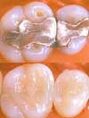การอุดฟันจะทำหลังจากที่รื้อเชื้อแบคทีเรียออกจากฟันเรียบร้อยแล้ว ซึ่งการอุดฟันนี้มี 2 ประเภท
- การอุดฟันด้วยวัสดุอมัลกัม
- การอุดฟันด้วยวัสดุสีเหมือนฟัน
คลินิกทันตกรรมสมายล์ ซิกเนเจอร์
เป็นคลินิกที่เน้นในเรื่องการอุดฟันด้วยวัสดุสีเหมือนฟันเพื่อความสวยงามและมีความแข็งแรงเท่าเทียม
กับวัสดุแบบอมัลกัม ซึ่งการอุดฟันที่เกิดขึ้นนั้นจะช่วยให้การขบเคี้ยวมีประสิทธิภาพมาก
ยิ่งขึ้นทันตแพทย์ของเรานั้นจะใช้เทคนิคร่วมกับเครื่งมือที่เรามีในการรื้อวัสดุอุดฟันที่เป็นอมัลกัม เพื่อความปลอดภัยของผู้เข้ารับบริการและยังใช้ผ้าที่ใช้ใส่ในการป้องกันเศษวัสดุต่างๆ
ร่วงลงคอนอกจากนั้นก็ใช้เครื่องดูดน้ำลายที่มีประสิทธิภาพสูงอีกด้วยรวมทั้งมีการใช้ไอน้ำพ่น
ขจัดผงตะกั่วอีกด้วย ด้วยความก้าวหน้าทางด้านวัสดุศาสตร์ การอุดฟันด้วยวัสดุสีเหมือนฟัน สามารถทำได้ทั้งในฟันหน้าและฟันหลัง
การทำความสะอาดฟัน ด้วย Airflow
ดูแลรักษาสุขภาพช่องปาก ทำความสะอาดฟันอย่างสม่ำเสมอ รอยยิ้มดูสดใส
 |
ทันตแพทย์จะทำการตรวจสุขภาพฟันก่อนเสมอเพื่อทราบถึงปัญหาโดย |
การฟอกสีฟัน
ฟันขาวสวยภายใน 1 ชั่วโมง| 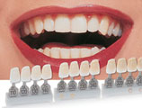 | การเปลี่ยนแปลงของสีฟันอาจเกิดขึ้นจากการทานยา สารเคมีหรือแม้แต่ลักษณะของ
อาหารและเครื่องดื่มที่ทาน การฟอกสีฟันยังช่วยแก้ไขฟันที่เป็นจุดด่างดำในบางครั้ง การฟอกสีฟันจะให้ผลการรักษาที่แตกต่างกันในผู้ป่วยแต่ละราย ทันตแพทย์จึงไม่สามารถที่จะคาดการณ์ได้ว่าฟันที่ฟอกจะขาวขึ้นเท่าไรในผู้ ป่วยแต่ละราย ผู้ป่วยบางรายอาจเกิดอาการเสียวฟันได้ขณะทำการฟอกสีฟัน ทันตแพทย์อาจต้องหยุดขบวนการฟอกสีฟันทันที่ ขึ้นอยู่กับดุลยพินิจของ ทันตแพทย์ ในผู้ป่วยแต่ละราย |
- การฟอกสีฟันที่คลินิกสามารถทำเสร็จได้ภายใน 1 ชัวโมง
- ไม่จำเป็นต้องมีการใส่ถาดฟอกสีฟันในตอนกลางคืน
- ทันตแพทย์จะต้องมีการตรวจฟันก่อนการที่จะทำการฟอกสีฟันเสมอ
ทางคลินิกจะไม่แนะนำให้ผู้ที่สูบบุหรี่จัดหรือดื่มแอลกอฮอร์มากๆมาทำการฟอกสีฟัน เนื่องจากลักษณะของคราบเหล่านั้นจะทำลายเนื่อเยื่อของฟันและมีผลต่อการฟอกสีฟัน ส่วนคราบที่เกิดจากดื่มชา กาแฟ ยังสามารถฟอกสีฟันได้ตามดุลยพินิจของทันตแพทย์
เคลือบฟัน Porcelain Veneers
เพิ่มความสวยสดใสด้วย วีเนียร์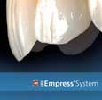
การเคลือบผิวหน้าฟันด้วยพอร์ซเลน มีลักษณะเป็นชิ้นงานเซรามิกบางๆ เพื่อมาปิดทับบริเวณผิวหน้าฟันเพื่อเปลี่ยนแปลงสีฟัน รูปร่าง และการเรียงตัวของฟัน การรักษาด้วยวิธีนี้เหมาะสำหรับผู้ที่มีฟันซี่เล็กหรือใหญ่เกินไป, มีการซ้อนเกของ
ฟัน, ฟันบิ่น หรือฟันที่มีผิวฟันไม่เรียบ วิธีนี้ช่วยแก้ปัญหาของความผิดปกติในลักษณะต่างๆของฟัน
และช่วยให้ยิ้มดูสวยงามมากขึ้น
ประเภทของการเคลือบผิวหน้าฟันด้วยพอร์ซเลน(วีเนียร์)
ด้วยการพัฒนาของวัสดุและเทคนิคในการทำพอร์ซเลนวีเนียร์ให้ดูเป็นธรรมชาติที่เป็นที่นิยมกัน
อย่างมากในปัจจุบัน ได้แก่ การทำแบบ IPS Empress Esthetic, IPS Empress E-Max และ เคลือบฟันแบบ Luminia
การทำ ครอบฟัน ด้วย Porcelain
เปลี่ยนแปลงรอยยิ้มให้น่ามอง
| 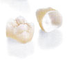 | การ ทำครอบฟันเป็นการคลุมตัวฟันเอาไว้ด้วยชิ้นงาน เซรามิกหรือ เพอร์เซเลน ซึ่งจะทำให้สามารถมองเห็นเป็นฟันได้ทั้งซี่ การครอบฟันเป็นการเปลี่ยนแปลงรูปร่างของฟันที่หัก และผุลึกจนไม่ สามารถอุดฟันได้ และจะช่วยให้การมองเห็นดูสสวยงาม ในบางครั้งการทำครอบฟันยังสามารถช่วยปรับการเรียงตัวของฟันให้ ดูดีขึ้นได้การครอบฟันสามารถทำได้ด้วยวัสดุหลายประเภทขึ้นอยู่กับ ลักษณะของฟันและการใข้ งาน |
ประเภทของการครอบฟัน
การครอบฟันอาจจะทำจากวัสดุพอร์ซเลน, โลหะผสม หรืออาจจะทำจาก 2 ชนิดผสมกันก็ได้ ซึ่งการใช้วัสดุทั้ง 2 แบบในฟันซี่เดียวกันจะเป็นการใช้
พอร์ซเลนคลุม
บริเวณด้าน
นอกของโลหะผสม
เพื่อความสวยงามและความแข็งแรงไปพร้อมกัน ซึ่งยังแยกออกได้เป็นหลายชนิด ดังนี้
- การครอบฟันโลหะผสมด้วยพอร์ซเลน หรือเซรามิกทั้งชิ้น
- การครอบฟันโลหะผสมทอง 2%ด้วย Porcelain
- การครอบฟันโลหะผสมทอง 50%ด้วยพอร์ซเลน
- การครอบฟันโลหะผสมทอง 85%ด้วยพอร์ซเลน
ส่วนการครอบฟันด้วยเซรามิกทั้งชิ้นจะมีสีฟันที่สวยกว่าเนื่องจากจะเป็นวิธีการครอบฟันที่ไม่มีโลหะผสมอยู่เลย ซึ่งแยกออกเป็นระบบการทำครอบฟันได้ ดังนี้ • การทำครอบฟันเซรามิกแบบ
- การทำครอบฟันเซรามิกแบบ 3M Lava
- การทำครอบฟันเซรามิกแบบ Cercon, Procera
- การทำครอบฟันเซรามิกแบบ IPS Empress & E-max
ผลที่ได้รับจากการครอบฟัน
- ครอบฟัน จะช่วยแก้ไขฟันที่แตก หัก หรือฟันที่ผิดปกติ
- ครอบฟัน จะทำการคลุมฟันที่ผิดปกติ
- ครอบฟัน จะช่วยให้ฟันที่รักษารากฟันไปมีความแข็งแรงขึ้น
- ครอบฟัน บนรากเทียมช่วยให้มีการสบฟันที่ดีขึ้น
- ครอบฟัน สามารถทำเชื่อมติดกันเป็นสะพานฟัน เพื่อทดแทนฟัน
ที่หายไป
และช่วย
ให้การสบฟันดีขึ้น ป้องกันฟันล้ม
ขั้นตอนการรักษาด้วยการครอบฟันด้วย Porcelain
- ก่อนการรักษาจะมีการตรวจสุขภาพฟันเพื่อประเมินก่อนการรักษาและเลือกชนิดของครอบฟันที่เหมาะสม กับผู้ป่วยแต่ละท่าน
- การเตรียมฟัน จะทำการกรอฟันบางส่วนออกจากนั้นก็จะมีการพิมพ์ฟันเพื่อส่งแลป แล้วทำครอบฟันชั่วคราว ให้ใส่ระหว่างรองานจากแลปทันตกรรม
- การใส่ฟัน รับงานกลับมาจากแลป แล้วทำการยึดติดที่ฟันด้วยซีเมนต์ชนิดพิเศษ ที่ใช้ยึดฟันด้วยทันตแพทย์
- การดูแลรักษา หลังจากการใส่ฟันแล้วควรดูแลรักษาความสะอาด แปรงฟันและใช้ไหมขัดฟันให้ถูกวิธีตามคำแนะนำจากทันตแพทย์ และมารับการตรวจเช็คทุก 6 เดือน
การทำรากฟันเทียม
การทำรากฟันใหม่เพื่อความแข็งแรงกว่า.| การทำรากฟันเทียม คือ การทำรากฟันใหม่ขึ้นทดแทนฟันที่สูญเสียไป โดยที่สามารถสร้างตัวฟันบนรากฟันเทียมได้หลายแบบอาทิ การครอบฟันแบบติดแน่น หรือถอดได้แล้วแต่กรณี รากเทียมจะทำขึ้นจากวัสดุไทเทเนียมที่มีการยึดติดกับกระดูก ได้ดี ทั้งนี้เพื่อจะได้ทดแทนและใช้งานได้เหมือนรากฟันธรรมชาติ การทำรากเทียมโดยทั่วไปจะ มี 3 แบบ |
- การทำรากเทียมทดแทนทันทีในวันเดียวกันซึ่งจะทำโดยการถอนฟันแล้วใส่รากเทียม
ทดแทนกลับไปในวันนั้น เลย พร้อมครอบฟันชั่วคราวหรือถาวร ขึ้นอยู่กับความเหมาะสม - การทำรากเทียมพร้อมกับตัวฟันทันที กรณีสูญเสียฟันไปก่อนหน้าโดยอาจจะทำการใส่ครอบฟันชั่วคราว หรือครอบฟันถาวร
ให้ไปพร้อมกับการทำรากเทียม จะพิจารณาทำแล้วแต่กรณีที่เหมาะสม - การทำรากเทียมด้วยวิธีทั่วไป คือจะแบ่ง การรักษาเป็น 2 ครั้ง ในครั้งแรก
จะทำการใส่รากเทียมไปในกระดูกรองรับรากเทียม แล้วรอให้รากเทียมยึดติดกับกระดูก ซึ่งต้องรอระยะเวลาประมาณ 4-6 สัปดาห์ ( ขึ้นอยู่กับระบบรากเทียมที่ใช้ และความสมบูรณ์ของกระดูกคนไข้เอง ) และหลังจากนั้น ก็จะกลับมาทำในส่วนของการใส่ฟัน บนรากฟันเทียมที่ยึดติดแน่นกับกระดูกแล้ว
ทำได้กับทุกคน การเอ็กซเรย์ ทั้งแบบธรรมดาและแบบ CTScan 3 มิติจะเป็นส่วนสำคัญมาก ในการช่วยทันตแพทย์ พิจารณาในการตัดสินใจ ทำรากเทียมในแต่ละประเภท
การผ่าตัด ถอนฟัน
การถอนฟันเป็นการเอาตัวฟันและรากฟันออกมา ในกรณี ดังนี้
- มีฟันผุอย่างรุนแรง ไม่สามารถบูรณะได้
- เป็นโรคปริทันต์ (โรคเกี่ยวกับเหงือก)
- ฟันที่อาจแตกจนไม่สามารถรักษาได้
- ฟันที่จำเป็นต้องถอนเพราะมีการขึ้นที่ผิดตำแหน่ง เช่นฟันคุด
- ฟันที่ต้องถอนเนื่องจากการจัดฟัน
การถอนฟันโดยทั่วไปสามารถทำได้ง่ายหลังจากการถอนฟันแล้วเหงือกจะขึ้นคลุมบริเวณที่ถอนออกไป สามารถ
ทดแทนฟันซี่นี้ได้ด้วยการทำสะพานฟัน, การทำรากเทียม หรือฟันปลอม
ถอดได้เพื่อ
ป้องกันฟันล้มในอนาคต
การผ่าฟันคุด
ฟันคุดจะมีประโยชน์ก็ต่อเมื่อขึ้นอยู่ในลักษณะที่สามารถใช้งานได้และสุขภาพเหงือกดีพอ ซึ่งถ้าขึ้นในลักษณะที่ไม่สามารถมองเห็นได้จะต้องทำการผ่าออก เนื่องจากเป็นสาเหตุของการเกิดหนอง ฟันผุระหว่างซี่ฟัน เหงือกอักเสบและปัญหาอื่นๆที่สามารถตามมาอีกได้ โดยทั่วไปทันตแพทย์จะแนะนำให้เอาฟันซี่นี้ออกเพื่อป้องกันปัญหาในเบื้องต้นทันตแพทย์ด้าน ศัลยกรรมช่องปากจะเป็นผู้ทำการประเมินลักษณะความยากหรือง่ายจากเอ็กซเรย์
การบูรณะช่องฟันที่หายไป
ปรับเปลี่ยนรอยยิ้มจากการสบฟัน เพิ่มความมั่นใจให้ตัวเอง
ทันตกรรมทางด้านใส่ฟันจะช่วยในเรื่องของฟันที่สูญหายหรือฟันที่แตกหัก โดยที่ทันตแพทย์จะตรวจดูสาเหตุของฟัน ที่หายไปเพื่อทำการรักษาได้ถูกช่องทาง และช่วยแก้ไขในส่วนนั้น
ผลที่ได้รับจากการทำฟันทดแทนฟันที่หายไป
ฟันที่หายไปอาจเป็นสาเหตุให้เกิดปัญหาในช่องปาก- การทำฟันขึ้นทดแทนอาจจะช่วยในเรื่องต่างๆ ดังนี้
- ป้องกันไม่ให้สูญเสียฟันเพิ่ม
- ป้องกันความเสียหายของเนื้อเยื่อภายในช่องปาก เช่น การลดลงของมวลกระดูก
- ป้องกันปัญหาโรคเหงือกที่อาจเกิดจากฟันผุในฟันที่ยังเหลืออยู่
- เนื่องจากการทำความสะอาดที่อาจทำได้ไม่ทั่วถึง
- เพิ่มความมั่นใจในรอยยิ้ม
- ช่วยปรับพฤติกรรมการทานอาหารให้ดีขึ้น
- ช่วยในเรื่องการพูด สนทนา
- ป้องกันให้หน้าไม่หย่อนคล้อย เนื่องจากสาเหตุของการไม่มีฟัน
การจัดฟันด้วยเครื่องมือแบบโลหะ
ฟันเรียงสวยเพื่อยิ้มสดใส
การจัดฟันจะเป็นการรักษาในเรื่องของความผิดปกติในการเรียงต้วของฟันที่ทำให้เกิดผลกระทบ
ต่อรูปร่างปาก และใบหน้า เช่นการมีฟันซ้อนเก, การสบฟันไม่ดีหรือแม้แต่การมีช่องห่างระหว่างฟัน การจัดฟันจึงเป็นทางแก้ปัญหาได้ดีที่สุดวิธีหนึ่ง และยังช่วยให้ฟันเรียงตัวดีชึ้น ช่วยส่งเสริม
บุคคลิกภาพของผู้เข้ารับการรักษาอีกด้วย ผลที่ได้หลังการจัดฟันรวมทั้งระยะเวลาที่ใช้ใน
การจัดฟัน ขึ้นอยู่กับอายุ และความรุนแรงของปัญหาของการสบฟันที่พบ
ประภทของการจัดฟัน ทางคลินิกจึงได้มีการจัดเตรียมการจัดฟันไว้หลายชนิด ดังนี้
There are types of dental braces appliances for orthodontics at Smile Signature dental clinic in Thailand by our thailand orthodontists are:
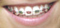 |
การจัดฟันด้วยเครื่องมือโลหะ MBT metal Braces มีขนาดเล็กลงกว่าเดิมมาก และการเลือกสียางที่ติดบนเครื่องมือจัดฟันก็ยังช่วยนำเสนอบุคคลิกที่เป็นตัวตนของคุณ ทำให้คุณมีความสนุกกับการจัดฟันมากขึ้น |
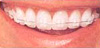 |
การจัดฟันด้วยเครื่องมือเซรามิก 3M Clarity Braces เป็นเครื่องมือที่มองเห็นได้น้อยมากในปัจจุบัน ซึ่งลักษณะ ของเครื่องมือมีความคล้ายคลึงกับแบบโลหะ แต่มองเห็นได้น้อยกว่ามาก |
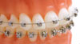 |
การจัดฟันด้วยเครื่องมือแบบ Damon หรือ การจัดฟันแบบ Clarity SL เป็นเครื่องมือที่ไม่ต้องใส่ยางรัดฟัน ทำให้การเคลื่อนฟันทำได้เร็วขึ้น และยังเป็นระบบที่ช่วยลดระยะเวลาในการรักษา ลดความเจ็บปวดในการรักษาได้เป็นอย่างดี |
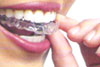 |
Invisalign เป็นการจัดฟันแบบที่มองไม่เห็นเครื่องมือ เป็นงานที่ทำจากแลปในประเทศ อเมริกาซึ่งการจัดฟันแบบนี้จะเป็นแบบถอดและใส่เองได้ เหมาะสำหรับผู้ที่ไม่ต้องการใส่เครื่องมือจัดฟันแบบติดแน่น และไม่ต้องการให้ผู้อื่นทราบว่ากำลังจัดฟันอยู่ |
การ จัดฟัน แบบใส Invisalign
การจัดฟันแบบใสโดยเครื่องมือแบบถอดได้, ให้ความสะดวกสบาย, ไม่สามารถมองเห็นได้
| 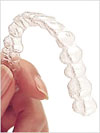 | การจัดฟันแบบใส Invisalign การจัดฟันประเภทนี้เครื่องมือจัดฟันจะมีลักษณะเป็นแผ่นโพลีเมอร์ใส คนไข้สามารถถอดออกได้ ซึ่งจะช่วยแก้ไขเรื่อง
การเรียงตัวของ การจัดฟันแบบใส invisalign ชิ้นงานจะถูกส่งมาจากสหรัฐอเมริกา โดยใช้เครื่องสแกนแบบ 3 มิติในการทำเครื่องมือ ออกมา โดยต้องเปลี่ยนชิ้นงานทุก 2-3 สัปดาห์ งานแต่ละชิ้นจะคำนวณตามการเคลื่อนของฟันมาเรียบร้อยแล้ว โดยที่ชิ้นงานจะระบุการใช้เฉพาะบุคคล ไม่สามารถใช้สลับกันได้ |
ผลที่ได้รับจากการ จัดฟันแบบใส Invisalign
- มีความมั่นใจในรอยยิ้มมากขึ้นเพราะไม่สามารถมองเห็นเครื่องมือได้
- ฟันเรียงตัวดีขึ้นและมีการบดเคี้ยวอาหารที่ดีขึ้น
- ทำความสะอาดฟันได้ตามปกติ เพราะไม่มีลวดและเครื่องมือติดฟันในช่องปาก
- ง่ายต่อการถอดและใส่ ให้ความรู้สึกรำคาญน้อยกว่าการจัดฟันทั่วไป
- สามารถถอดออกเพื่อล้าง และทำความสะอาดได้ง่าย ลดการเกิดฟันผุ และเหงือกอักเสบ
ตัวอย่างผลการรักษา การจัดฟันแบบใส Invisalign โดยทันตแพทย์จัดฟัน ของ สไมล์ ซิกเนเจอร์
Front View |
|
| 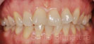 | 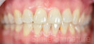 |
ก่อนการรักษา |
หลังการรักษา |
Upper View |
|
| 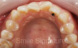 | 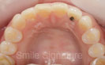 |
ก่อนการรักษา |
หลังการรักษา |
การรักษารากฟัน
รักษารากฟันที่ติดเชื้อ
รักษารากฟันที่ติดเชื้อ เช่นฟันผุทะลุโพรงประสาทฟัน ฟันติดเชื้อจากโรคปริทันต์ โดยผู้ป่วยอาจต้องมาพบทันตแพทย์มากกว่า 2 ครั้ง ขึ้นอยู่กับความรุนแรงของการติดเชื้อ และผู้ป่วยแต่ละราย
ผลที่ได้รับจากการรักษารากฟัน
กำจัดเชื้อแบคทีเรียออกจากรากฟัน และกระดูกรองรับฟัน กำจัดอาการปวด หนอง ป้องกันการแพร่ระบาดของเชื้อโรคที่อาจจะมีการกระจายสู่เนื้อเยื่อและกระดูกข้างเคียง
ขั้นตอนในการรักษารากฟัน
การรักษาคลองรากฟัน คือ การขจัดคราบเชื้อแบคทีเรียที่ สะสมอยู่ในคลองรากฟันออกให้หมดและทำการอุดคลองรากฟันด้วยวัสดุอุดคลองรากฟัน ซึ่งมีวิธีการ ดังนี้
- การกำจัดเนื้อเยื่อที่ไม่มีประโยชน์ เพื่อทำให้คลองรากฟันสะอาด
- การล้างคลองรากฟัน หลังจากที่เอาเนื้อเยื่อบางส่วนออกแล้วจะทำการล้าง
ทำความสะอาดคลองรากฟันก่อนที่จะทำ - การอุดฟันเพื่อป้องกันเชื้อโรคเข้าไปใหม่ แต่บางครั้งทันตแพทย์จะใส่ยาฆ่าเชื้อทิ้งไว้ด้วย
- การอุดรากฟัน ทำหลังจากที่รากฟันสะอาดไม่มีเชื้อโรคเรียบร้อยแล้วโดยจะอุดด้วย
วัสดุอุดฟันชั่วคราวหรือถาวรจะพิจารณาจากเนื้อฟันที่เหลืออยู่ - การทำเดือยฟันและครอบฟัน หลังจากการรักษารากฟันเสร็จสมบูรณ์แล้วเนื้อฟันเหลือน้อย การทำเดือยและครอบฟัน จึงเป็นวิธีการที่จะช่วยเก็บรักษา
- รากฟันไว้ให้ใช้งานได้นานมากขึ้น ผลที่ได้รับ ฟันซี่ที่รักษาจะทำให้สุขภาพช่องปากดีขึ้น
การทำฟันปลอมแบบถอดได้
การทำฟันปลอมแบบถอดได้.การทำฟันปลอมชนิดนี้เป็นการแทนที่ฟันที่หายไปประเภทหนึ่งสามารถทำฐานในการยึดได้จากทั้งอะคลิลิกและโลหะฟันปลอมถอดได้ทั้งชิ้นจะทำเพื่อทดแทนในกรณีที่ไมมีฟันเหลืออยู่เลย ส่วนการทำฟันปลอมถอดได้เฉพาะซี่เป็นการใส่เพื่อช่วยไม่ให้ฟันซี่ที่เหลือล้มเปลี่ยนตำแหน่ง
ผลที่ได้รับจากการทำฟันปลอมถอดได้
- ฟันปลอมถอดได้ในปัจจุบันจะดูเป็นธรรมชาติและใส่ได้พอดีมากขึ้น
- ฟันปลอมแบบนี้สามารถทำได้ทั้งชิ้นเพื่อช่วยในการใช้งานดีขึ้ น
- การใส่ฟันปลอมช่วยให้ทานอาหารและพูดคุยได้ดี
- จะมีความมั่นใจในการยิ้มมากขึ้น
ประเภทของฟันปลอม
| ฟันปลอมถอดได้เฉพาะซี่ | |
ฟันปลอมถอดได้เฉพาะซี่ เป็นการเติมฟันบางซี่ที่หายไป ลงบนชิ้นงานแล้วนำไปใส่โดย |
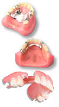 |
| ฟันปลอมถอดได้ทั้งชิ้น เป็นการทำฟันปลอมทั้งชิ้นโดยที่ชิ้นงานจะต้องยึดกับเหงือก ได้เป็นอย่างดี ฟันปลอมแบบนี้จะนิยมทำด้วยอะคลิลิกหรือพลาสติก อาจมีการ เติมชิ้นส่วนโลหะที่บริเวณกรอบฟันเพื่อเพิ่มความแข็งแรง |
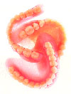 |
| การทำฟันปลอมบนรากเทียม จะมีลักษณะใกล้เคียงกับฟันปลอมแบบถอดได้ทั้งชิ้น แต่ การทำแบบนี้จะนิยมทำเพื่อยึดกับรากเทียม ทั้ง 2 ชนิดมีข้อแตกต่างในการใช้งานต่างกัน เพราะฟันที่อยู่บนรากเทียมจะมีความแข็งแรง,ไม่หลุดง่าย,ใช้งานได้ดี เนื่องจากมีราก เทียมเป็นตัวช่วยยึดฟัน และสามารถทำฟันปลอมให้เล็กลง ทำให้สวมใส่สบายและพูดชัดเจนขึ้น |
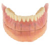 |